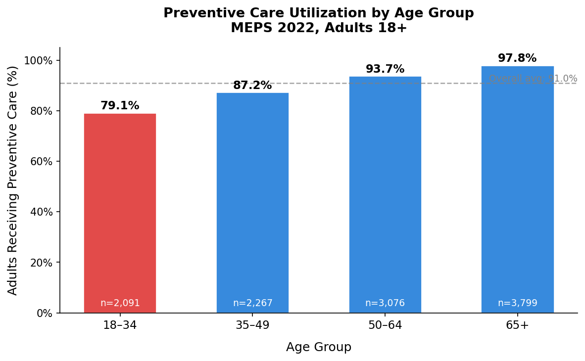
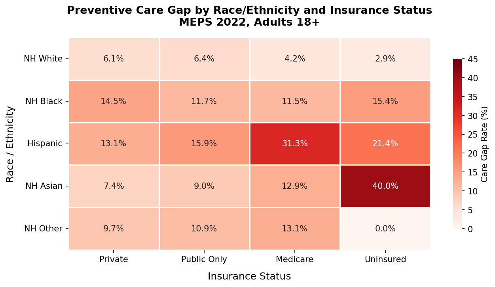
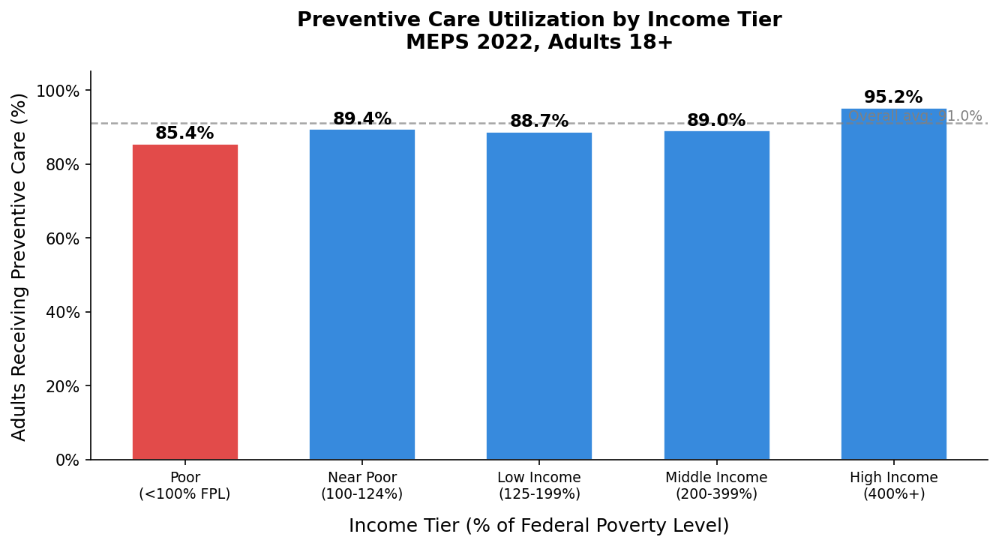
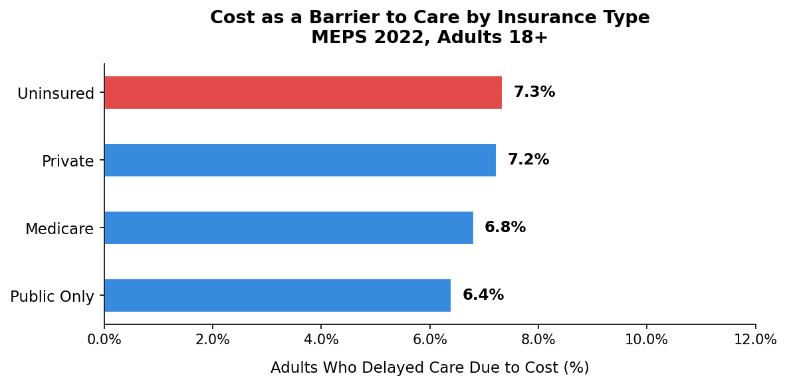
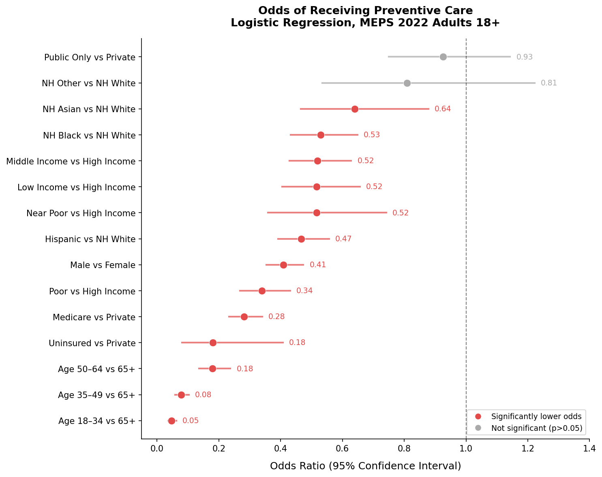
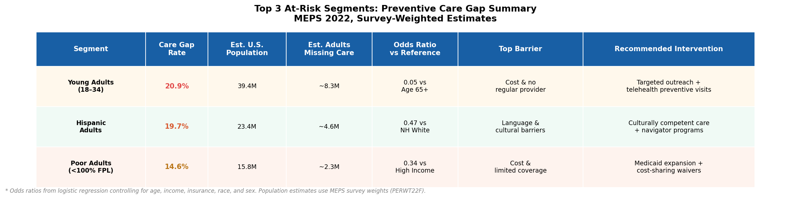

Preventive Care Gaps in the U.S.
Who falls through the cracks? A healthcare consulting-style analysis using MEPS 2022 survey data.
Executive Summary
Health plans and Accountable Care Organizations (ACOs) invest heavily in preventive care because it works: it reduces downstream costs, improves member outcomes, and is directly measurable. But not every member is getting that care, and the gaps are not distributed evenly across the population.
This analysis uses the 2022 Medical Expenditure Panel Survey (MEPS), a nationally representative survey of 22,431 Americans, to identify which adults are least likely to receive recommended preventive care, what factors independently predict that gap, and which segments represent the highest-priority targets for outreach and intervention.
Three segments account for the largest preventive care gaps:
- Young adults aged 18–34 — 20.9% care gap, ~8.3 million Americans not receiving recommended care
- Hispanic adults — 19.7% care gap, ~4.6 million Americans
- Poor adults below 100% of the federal poverty level — 14.6% care gap, ~2.3 million Americans
After controlling for income, insurance, race, and sex in a logistic regression model, age is the single strongest predictor of non-utilization. Young adults aged 18–34 have 95% lower odds of receiving preventive care than adults 65 and older, a disparity that holds even after accounting for income and insurance status.
Context & Business Question
A regional health plan or ACO managing a diverse member population faces a practical problem: preventive care visits are not happening for a significant share of members, and identifying who those members are, and why they are not engaging, requires more than intuition. The business question this analysis addresses is:
Which members are least likely to receive recommended preventive care, and what demographic, socioeconomic, and insurance-related factors predict that gap?
Answering this question allows a health plan to:
- Prioritize outreach to the highest-risk segments first
- Design interventions matched to the specific barriers each segment faces
- Track gap closure over time as a quality improvement metric
- Demonstrate HEDIS measure improvement to regulators and purchasers
Data & Methods
Data source: MEPS Full Year Consolidated File, 2022 (HC-243), published by the Agency for Healthcare Research and Quality (AHRQ). A nationally representative survey of the U.S. civilian noninstitutionalized population, conducted annually with survey weights that allow results to be scaled to the full U.S. population.
Analysis sample: 17,909 adults aged 18 and older; 11,274 were asked about at least one preventive screening and are included in the utilization analysis.
Outcome variable: A yes/no variable combining seven preventive screening questions (Pap smear, mammogram, colorectal cancer screening, blood stool test, cholesterol check, blood pressure check, flu shot), considering only the screenings applicable to each person's age and sex.
Predictors: Age group, income tier (% of federal poverty level), insurance category, race/ethnicity, and sex.
Methods:
- Descriptive analysis of care rates by demographic and socioeconomic group
- Logistic regression (Python, statsmodels) reported as odds ratios with 95% confidence intervals
- Population sizing using survey weights to estimate real-world impact, not just sample counts
Note: the overall preventive care rate in this sample is 91%, driven largely by routine blood pressure and cholesterol checks. The more meaningful story is in the variation across groups and in cancer screening / flu shot rates.
Finding 1 — Young Adults Are the Most Underserved Group

Adults aged 18–34 have a preventive care rate of 79.1%, the lowest of any age group and well below the overall average of 91%. Their care gap of 20.9% is nearly 10 times larger than the gap for adults 65 and older (2.2%).
This finding is counterintuitive. Conventional thinking assumes younger adults need less healthcare. But the data suggests younger adults are systematically disengaged from the preventive care system, not because they are healthy, but because the system is not reaching them effectively.
The logistic regression confirms this: after controlling for income, insurance, race, and sex, adults aged 18–34 have odds of receiving preventive care that are 95% lower than adults 65 and older (OR = 0.05, 95% CI: 0.036–0.062) — the strongest effect in the entire model.
Why this gap likely exists:
- Young adults are most likely to be on high-deductible plans where cost-sharing discourages visits
- They are least likely to have an established primary care relationship
- Preventive care guidelines are less visible to those who haven't yet developed regular healthcare habits
Finding 2 — Race and Income Disparities Persist After Controlling for Insurance

NH Black adults face persistent gaps regardless of insurance type — 11.5–15.4% across all four insurance categories. Providing insurance coverage alone does not close the gap: NH Black adults have 47% lower odds of receiving preventive care than NH White adults after controlling for income, insurance, and age (OR = 0.53, 95% CI: 0.432–0.649). This points to factors beyond coverage, including historical distrust of the healthcare system, differential quality of care, and geographic access barriers.
Hispanic adults on Medicare have the single largest cell-level gap at 31.3%, likely reflecting decades of limited preventive care engagement prior to reaching Medicare age.

Income is independently associated with utilization at every tier. Poor adults have 66% lower odds of receiving care than high-income adults after adjustment (OR = 0.34). The gradient isn't perfectly linear — near-poor, low-income, and middle-income adults all cluster around OR ≈ 0.52, with a sharp improvement only at the highest income tier.
Finding 3 — Cost Barriers Are Not Just an Uninsured Problem

Roughly 7% of adults delayed care due to cost, and this rate barely varies between uninsured (7.3%), privately insured (7.2%), Medicare (6.8%), and publicly insured (6.4%) adults. Expanding coverage alone will not eliminate cost-related care delays — privately insured adults delay care at nearly the same rate as the uninsured, likely due to high deductibles and out-of-pocket costs.
Implication: reducing cost barriers requires eliminating cost-sharing specifically for preventive services, and communicating clearly that preventive visits are covered at no cost under ACA-compliant plans.
Segment Sizing & Prioritization

This chart plots each segment by care gap rate against estimated U.S. population size. Segments in the upper right are the highest-priority targets: large populations with high gap rates.
- Adults aged 18–34: 39.4 million people in the high-gap zone — the largest absolute burden of any segment
- Hispanic adults: 19.7% gap across 23.4 million people — the strongest race/ethnicity effect in the model
- Middle-income adults: 45 million people with an 11% gap — the largest absolute population with a meaningful gap, often overlooked in policy discussions focused only on the poor and uninsured

The forest plot shows each predictor's independent effect after controlling for all others. Every predictor except public-only insurance and NH Other race is statistically significant, with a striking age gradient that worsens with decreasing age.
Recommendations

Segment 1 — Young Adults (18–34)
20.9% gap, ~39.4 million Americans — the single largest opportunity.
- Telehealth-based preventive visits to remove transportation/scheduling barriers
- Outreach via text, app notifications, and social media rather than mail or phone
- Clear, repeated communication that ACA-compliant plans cover preventive visits at zero cost share
- Partnerships with employers and universities to reach young adults through trusted channels
Segment 2 — Hispanic Adults
19.7% gap, persistent even among the insured — pointing to cultural and linguistic barriers.
- Community health worker / promotora programs with cultural and linguistic connection
- Increased Spanish-language materials across all member touchpoints
- Outreach through community organizations, churches, and cultural events
- Care navigation support specifically for Medicare-enrolled Hispanic adults
Segment 3 — Poor Adults (Below 100% FPL)
OR = 0.34, the strongest income-related effect in the model.
- Medicaid outreach and enrollment assistance for eligible but unenrolled adults
- Full elimination of cost-sharing for preventive services near the poverty line
- Transportation assistance programs
- Integration with social services addressing food insecurity, housing instability, and other competing priorities
Project Limitations
- Self-reported data: household interviews may introduce measurement error; claims-based data would be more reliable for production use
- Composite outcome driven by routine checks: the 91% overall rate reflects high-frequency blood pressure/cholesterol checks; cancer-specific screening gaps are likely larger
- Small uninsured sample: only 112 adults, so the uninsured odds ratio (0.18) carries a wide confidence interval (0.081–0.407)
- Small cell sizes in the heat map: some race × insurance combinations have low sample sizes and should be interpreted cautiously
- Unweighted regression: odds ratios are directionally correct, but confidence intervals may be slightly underestimated without a survey-weighted framework
- Cross-sectional data: this analysis identifies associations, not causation
What I Would Do With More Data
- Claims-based outcome validation: replace self-reported data with claims-verified HEDIS measures (AWC, BCS, CCS, COL)
- Longitudinal gap tracking: link multiple years of claims data to measure gap closure after interventions
- Social determinants integration: merge ZIP-code level SDOH data to help explain residual racial disparities
- Cost impact modeling: translate care gaps into estimated downstream cost avoidance to support an ROI case for executive sponsorship
Analysis conducted using MEPS HC-243 (2022). Tools used: Python, pandas, numpy, statsmodels, matplotlib, seaborn, Jupyter.